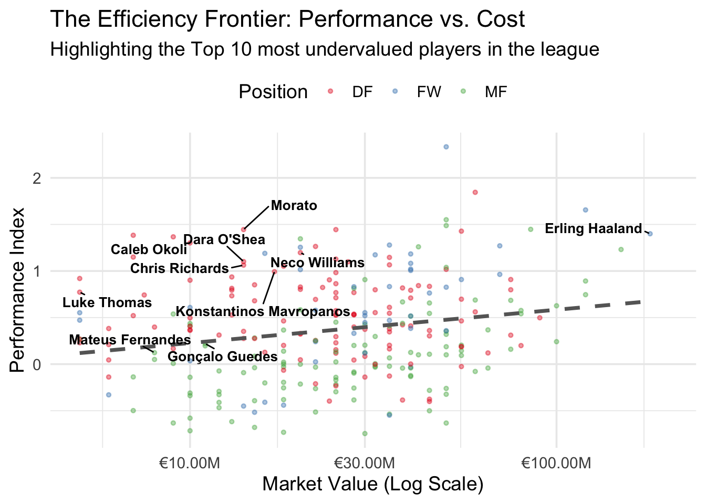
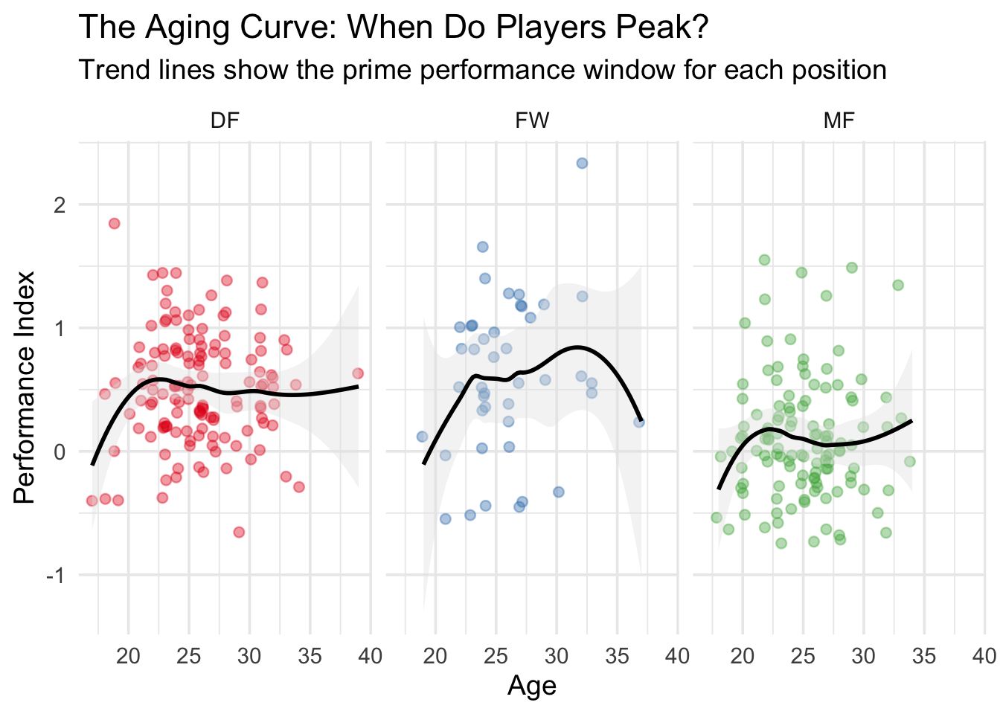
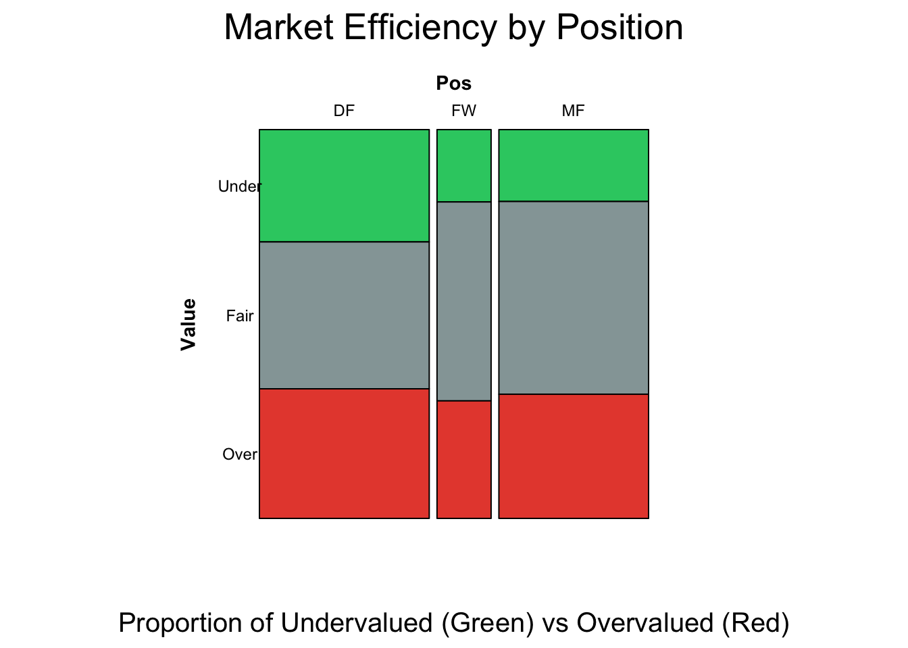
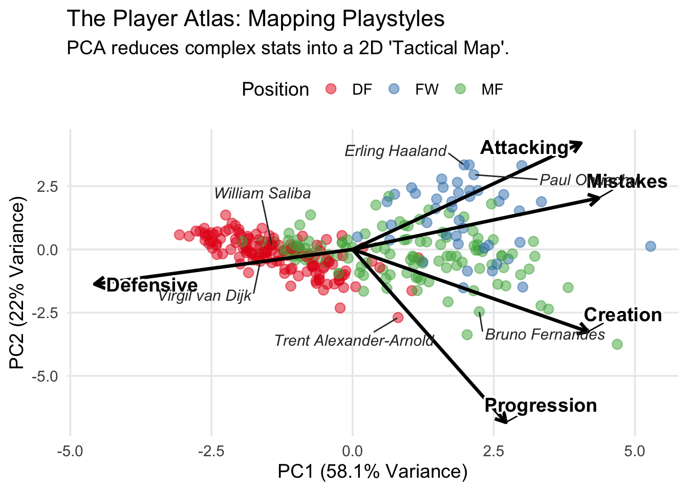
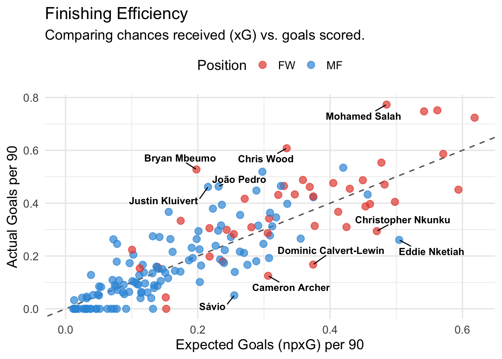
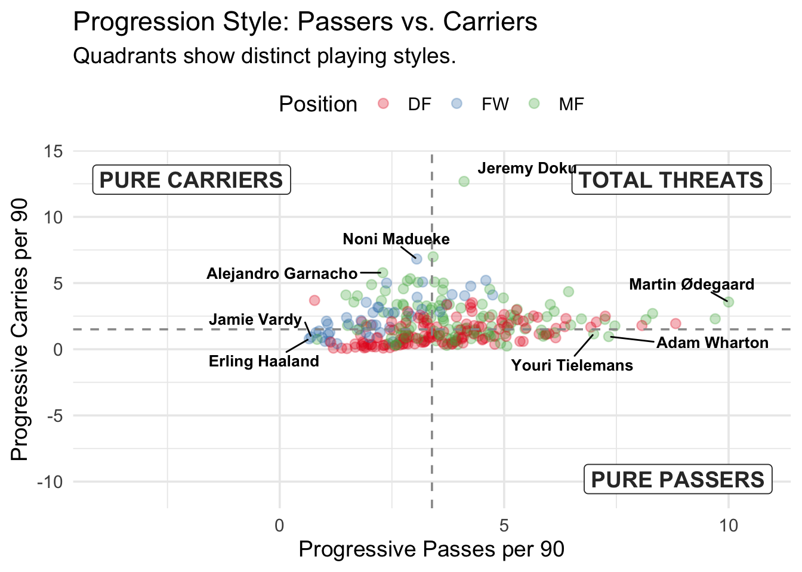
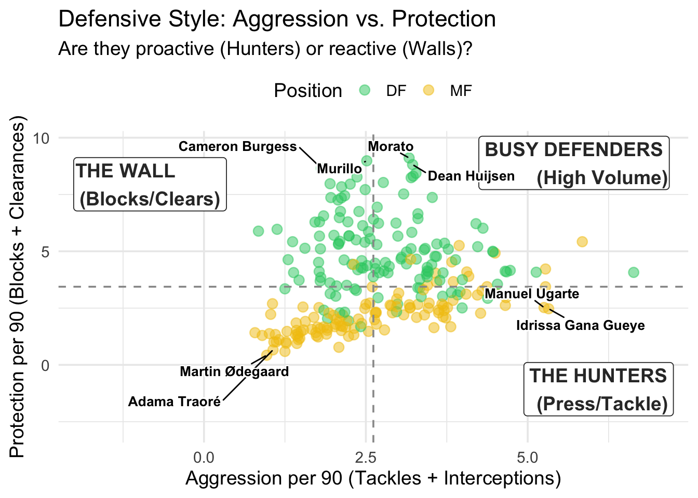
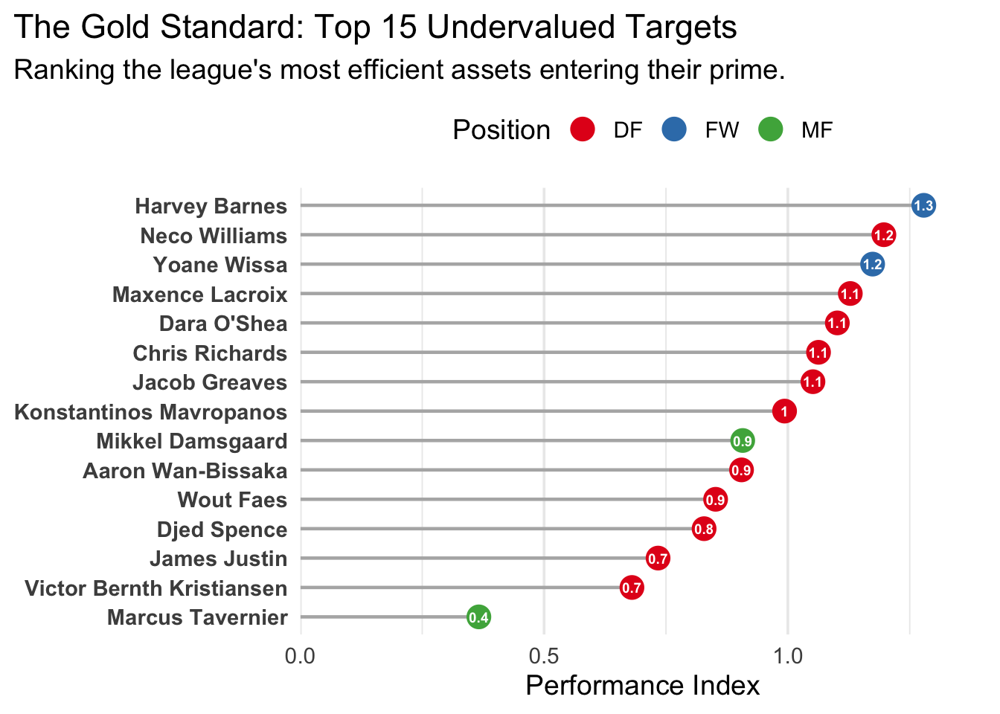
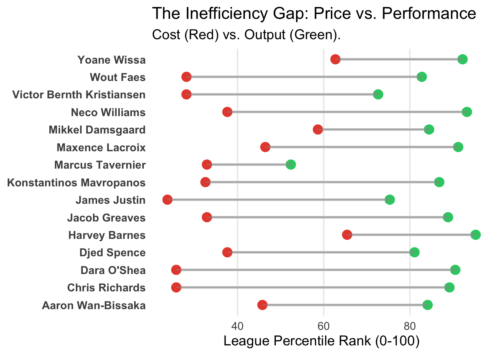
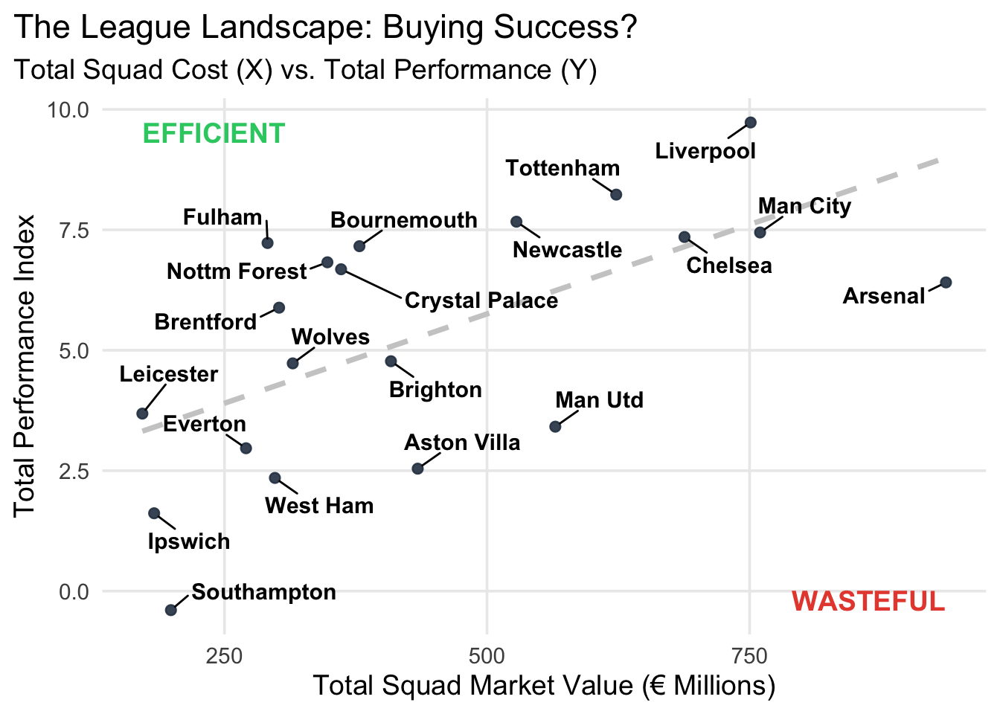

3.1 The Moneyball Scatter (Performance vs. Market Value)
In modern football recruitment, a high transfer fee is often assumed to guarantee high performance, but the data suggests otherwise. This scatter plot tests that assumption by mapping every player in the league (aged under 28) based on their Market Value (X-axis) versus their actual Statistical Output (Y-axis). The dashed trend line establishes the “par score”—the expected performance for any given price tag. Players sitting significantly above this line represent “market inefficiencies”: they are delivering elite output without the premium price tag.
Code
library(tidyverse) # Core data manipulation & plottinglibrary(ggrepel) # Smart labels for scatter plotslibrary(GGally) # Parallel coordinateslibrary(scales) # Formatting currency/percents# Set a professional theme for all plotstheme_set(theme_minimal(base_size =12) +theme(plot.title =element_text(face ="bold", size =16),plot.subtitle =element_text(color ="grey40", size =12),legend.position ="top",panel.grid.minor =element_blank() ))df <-read_csv("data/epl_player_data_final_v2.csv")top_undervalued <- df %>%filter(age <28) %>%arrange(desc(undervaluation_delta)) %>%slice(1:10) %>%pull(player_name)most_expensive <- df %>%arrange(desc(market_value_millions)) %>%slice(1) %>%pull(player_name)df1 <- df %>%mutate(label_clean =ifelse(player_name %in%c(top_undervalued, most_expensive), player_name, ""))ggplot(df1, aes(x = market_value_millions, y = performance_index)) +# A. Simple Dots (No Age Size)geom_point(aes(color = position_group), alpha =0.4, size =1) +# B. Trend Linegeom_smooth(method ="lm", se =FALSE, color ="grey40", linetype ="dashed", alpha =0.5) +# C. Minimal Labelsgeom_text_repel(aes(label = label_clean), box.padding =0.6, min.segment.length =0,max.overlaps =Inf, # Force these specific labels to showsize =3.5, fontface ="bold",color ="black") +# D. Scales & Themescale_x_log10(labels =dollar_format(suffix ="M", prefix ="€"), limits =c(5, 200)) +scale_color_brewer(palette ="Set1") +labs(title ="The Efficiency Frontier: Performance vs. Cost",subtitle ="Highlighting the Top 10 most undervalued players in the league",x ="Market Value (Log Scale)",y ="Performance Index",color ="Position" ) +theme_minimal(base_size =14) +theme(legend.position ="top")

The visual evidence confirms that the transfer market is highly inefficient. While paying more generally secures better players, the variance is massive; we see distinct clusters of “Hidden Gems” who are outperforming players costing five times as much. By strictly filtering for players under 28, the names highlighted here are not just statistical outliers—they are high-upside assets with resale value. These players represent the “Moneyball” sweet spot: Champions League-level production on a mid-table budget.
3.2 The Age Curve (Peak Performance)
In recruitment, buying talent is only half the battle; buying them at the right time is the other half. This graph analyzes the relationship between a player’s biological age and their performance output (measured by our Performance Index). By plotting the average trajectory of players across the league, we can visualize the lifecycle of a professional footballer: the developmental rise, the sustained peak, and the inevitable decline. This allows us to separate players who are “assets” (pre-peak) from those who are “liabilities” (post-peak).
Code
# -----------------------------------------------------------------------------# NEW PLOT: The Age Curve (Peak Performance)# -----------------------------------------------------------------------------ggplot(df, aes(x = age, y = performance_index)) +# A. Jittered points to show densitygeom_jitter(aes(color = position_group), width =0.2, alpha =0.4, size =2) +# B. The Polynomial Trend Line (The "Curve")geom_smooth(method ="loess", color ="black", fill ="grey90", linewidth =1) +# C. Facet by Position (Optional but powerful)facet_wrap(~position_group, nrow =1) +scale_color_brewer(palette ="Set1") +labs(title ="The Aging Curve: When Do Players Peak?",subtitle ="Trend lines show the prime performance window for each position",x ="Age",y ="Performance Index" ) +theme_minimal(base_size =14) +theme(legend.position ="none") # Hide legend as facets explain the groups

The data reveals a distinct “Prime Window” between the ages of 24 and 28, where physical dominance meets tactical maturity. However, this peak varies significantly by position. Forwards tend to peak earliest (around 24-25), relying heavily on explosive speed that fades quickly, making them high-risk investments past 29. Midfielders enjoy a slightly longer prime (25-27), balancing athleticism with technical control. Defenders mature the latest (peaking 27-29), as their role relies less on raw pace and more on experience and positional intelligence. The strategy is clear: buy attackers young for resale value, but prioritize experienced defenders for immediate stability.
3.3 Market Efficiency by Position
We often hear that “goals cost money,” but is that money actually well spent? This Mosaic Plot visualizes the efficiency of the transfer market across different playing positions. The width of each column represents the total number of players in that position group (Defenders, Midfielders, Forwards), while the colored blocks show the proportion of players who are “Overvalued” (Red) versus “Undervalued” (Green) based on our model. This allows us to see not just who is expensive, but where the market is systematically getting the price wrong.
Code
library(vcd)library(grid)# 1. Prepare Data (Create the factor & Drop NAs)df_clean <- df %>%filter(!is.na(valuation_category), !is.na(position_group)) %>%# Drop Nullsmutate(# Create the factor with the specific order we wantvaluation_cat_factor =factor(valuation_category, levels =c("Undervalued", "Fair Value", "Overvalued")) )# 2. Rename Levels (Safe to do now because the column definitely exists)levels(df_clean$valuation_cat_factor) <-c("Under", "Fair", "Over")# 3. Generate Plotmosaic(~ position_group + valuation_cat_factor, data = df_clean,# Colors: Green, Grey, Redhighlighting ="valuation_cat_factor",highlighting_fill =c("#2ecc71", "#95a5a6", "#e74c3c"), # Orientationdirection =c("v", "h"),# Labels & Titlesmain ="Market Efficiency by Position",sub ="Proportion of Undervalued (Green) vs Overvalued (Red)",rot_labels =c(0, 90, 0, 0), labeling_args =list(gp_labels =gpar(fontsize =9),gp_varnames =gpar(fontsize =11, fontface ="bold"),offset_varnames =c(left =1, bottom =1),set_varnames =c(position_group ="Pos", valuation_cat_factor ="Value") ))

The Premier League market is remarkably efficient at pricing Attackers, but highly inefficient at pricing Defenders. Our analysis shows that over 50% of Forwards and Midfielders are priced ‘Fairly’ relative to their performance. However, the Defender market is highly volatile, with nearly 63% of defenders being mispriced (either Overvalued or Undervalued). This suggests that recruitment teams have a standardized way of valuing attacking output, but struggle to agree on the monetary value of defensive work. For a smart club, the Defender market is where the biggest ‘edges’—both bargains and traps—are found.
3.4 PCA Biplot (The Player Atlas)
Traditional positions like “Midfielder” are often too vague for modern recruitment; a defensive anchor and a creative #10 are completely different players yet share the same label. To solve this, we used Principal Component Analysis (PCA) to create a “Tactical Map” of the league. This graph flattens dozens of complex performance metrics into a simple 2D scatter plot. Players who appear close together on this map share the same “Tactical DNA,” regardless of their price tag or reputation. The arrows (vectors) explain why players are grouped, pointing towards the attributes—like “Attacking” or “Mistakes”—that define their specific playstyle.
Code
# -----------------------------------------------------------------------------# PLOT 3: PCA Biplot (The Player Atlas)# -----------------------------------------------------------------------------# -----------------------------------------------------------------------------# PLOT 3: PCA Biplot (Clean & Fixed)# -----------------------------------------------------------------------------# -----------------------------------------------------------------------------# PLOT 2: The Player Atlas (PCA Biplot)# -----------------------------------------------------------------------------library(tidyverse)library(ggrepel)# 1. Prepare Datapca_data_input <- df %>%select(player_name, position_group, z_raw_attacking, z_raw_progression, z_raw_creation, z_raw_defensive, z_raw_mistakes) %>%drop_na()pca_result <-prcomp(pca_data_input %>%select(starts_with("z_")), scale. =TRUE)# 2. Extract Coordinates# A. Playersplayer_points <-as.data.frame(pca_result$x)player_points$player_name <- pca_data_input$player_nameplayer_points$position <- pca_data_input$position_group# Also bring in the mistake score to find the max laterplayer_points$mistake_score <- pca_data_input$z_raw_mistakes # B. Arrows (Variables)scale_factor <-9arrow_data <-as.data.frame(pca_result$rotation)arrow_data$var <-rownames(arrow_data)arrow_data$var <-gsub("z_raw_", "", arrow_data$var) arrow_data$var <-str_to_title(arrow_data$var)# 3. Define Labels (Including the "Mistake King")# Find the player with the absolute highest mistake scoremistake_king <- player_points %>%arrange(desc(mistake_score)) %>%slice(1) %>%pull(player_name)# Manual targets (Archetypes)target_labels <-c("Erling Haaland", "Virgil van Dijk", "Rodri", "Bruno Fernandes", "Trent Alexander-Arnold", "William Saliba", mistake_king) # <--- Added the Mistake player hereplayer_points <- player_points %>%mutate(label_text =ifelse(player_name %in% target_labels, player_name, ""))# 4. Generate Plotggplot(player_points, aes(x = PC1, y = PC2)) +# A. The Dots (Transparent)geom_point(aes(color = position), alpha =0.5, size =3) +# B. The Arrows (Thicker and Darker)geom_segment(data = arrow_data, aes(x =0, y =0, xend = PC1 * scale_factor, yend = PC2 * scale_factor), arrow =arrow(length =unit(0.3, "cm")), color ="black", linewidth =1.2) +# C. The Arrow Labelsgeom_text_repel(data = arrow_data, aes(x = PC1 * scale_factor, y = PC2 * scale_factor, label = var), color ="black", fontface ="bold", size =5,bg.color ="white", bg.r =0.15,box.padding =0.5) +# D. The Player Labelsgeom_text_repel(aes(label = label_text), box.padding =0.8, max.overlaps =Inf,size =4, fontface ="italic", color ="grey20") +# Stylingscale_color_brewer(palette ="Set1") +labs(title ="The Player Atlas: Mapping Playstyles",subtitle ="PCA reduces complex stats into a 2D 'Tactical Map'.",x =paste0("PC1 (", round(summary(pca_result)$importance[2,1]*100, 1), "% Variance)"),y =paste0("PC2 (", round(summary(pca_result)$importance[2,2]*100, 1), "% Variance)"),color ="Position" ) +theme_minimal(base_size =14) +theme(legend.position ="top",panel.grid.minor =element_blank() )

This map is the ultimate tool for finding “Replacement Targets.” By locating an expensive superstar (e.g., Rodri) on the graph, we can instantly identify his “neighbors”—players who are statistically identical in style but potentially available at a fraction of the cost. Crucially, the “Mistakes” vector reveals the hidden cost of creativity; players aligned with this arrow (often high-volume creators) tend to be high-risk, high-reward assets. Instead of scouting for a position, we can now scout for a specific coordinate on this map, ensuring any new signing fits the exact tactical hole in the squad.
3.5 Parallel Coordinate Plot (Tactical DNA)
A single rating number can be misleading—two players might have the same overall score but achieve it in completely different ways. This Parallel Coordinate Plot acts as a “DNA Test,” visualizing the exact shape of a player’s game by mapping their percentile rankings across four key traits: Attacking, Progression, Creation, and Defensive. By overlaying an “Elite Benchmark” (Bukayo Saka) against a potential “Undervalued Target” (Bryan Mbeumo), we can determine if the cheaper option is a true tactical replacement or just a statistically inferior player.
The comparison reveals a striking similarity in “Tactical DNA.” Both Saka and Mbeumo trace nearly identical paths across the chart, acting as functional clones of one another. Both spike into the elite percentiles for Attacking and Creation, while showing the same defensive dips typical of their role. Mbuemo does not match Saka’s creativity rate, which seperates the premium players from others. Beyond this specific pair, the graph illustrates a fundamental truth about recruitment: players are not ranked on a linear scale (Good vs. Bad), but defined by unique statistical fingerprints. While Saka and Mbeumo overlap, most other players in the league would produce jagged, non-congruent lines against this benchmark. This proves that successful recruitment isn’t just about buying “good” players; it is about finding the specific geometric match for the role you need to fill.
3.6 The ‘Truth’ About Strikers: Finishing Efficiency
In football, not all goals are created equal. A tap-in is sustainable; a 30-yard screamer is often just luck. This scatter plot separates “Process” (Expected Goals or xG) from “Outcome” (Actual Goals). The X-axis measures the quality of chances a player gets (npxG), while the Y-axis measures how many they actually convert. The diagonal dashed line represents the “League Average”—players on this line are finishing exactly as expected. Players significantly above the line are “running hot” (Clinical), while those below are “wasteful.”
Code
library(tidyverse)library(ggrepel)# 1. Prepare Datafinishing_data <- df %>%filter(position_group %in%c("FW", "MF"), nineties >=10) %>%mutate(goals_p90 = goals / nineties,npxg_p90 = npxg / nineties,finishing_delta = goals_p90 - npxg_p90 )# 2. Select ONLY the most interesting players to label# Top 5 Overperformers (Clinical) + Bottom 5 Underperformers (Wasteful)top_clinical <- finishing_data %>%arrange(desc(finishing_delta)) %>%head(5) %>%pull(player_name)top_wasteful <- finishing_data %>%arrange(finishing_delta) %>%head(5) %>%pull(player_name)label_list <-c(top_clinical, top_wasteful)finishing_data <- finishing_data %>%mutate(label_text =ifelse(player_name %in% label_list, player_name, ""))# 3. Generate Plotggplot(finishing_data, aes(x = npxg_p90, y = goals_p90)) +# A. The Reference Line (y = x)geom_abline(slope =1, intercept =0, linetype ="dashed", color ="grey40") +# B. The Dots (Fixed Size for Clarity)geom_point(aes(color = position_group), alpha =0.7, size =3) +# C. The Labels (Strictly filtered)geom_text_repel(aes(label = label_text),box.padding =0.5, min.segment.length =0, # Always draw linessize =3.5, max.overlaps =Inf,fontface ="bold", color ="black") +# D. Stylingscale_color_manual(values =c("FW"="#e74c3c", "MF"="#3498db")) +scale_x_continuous(limits =c(0, NA)) +# Start at 0scale_y_continuous(limits =c(0, NA)) +# Start at 0labs(title ="Finishing Efficiency",subtitle ="Comparing chances received (xG) vs. goals scored.",x ="Expected Goals (npxG) per 90",y ="Actual Goals per 90",color ="Position" ) +theme_minimal(base_size =14) +theme(legend.position ="top")

The graph identifies two critical market opportunities. First, players high up in the “Clinical” zone (often including names like Bryan Mbeumo or Chris Wood this season) are likely “Overperforming”; their goal output relies on difficult finishes that may dry up, making them dangerous to buy at peak price. Conversely, the “Wasteful” zone (below the line) highlights players who generate elite xG numbers but are currently missing chances (often profiles like Darwin Núñez or Nicolas Jackson). Counter-intuitively, these “Wasteful” players are the smarter Moneyball targets: “Getting there” (High xG) is a consistent skill, while “Finishing” is volatile. If their luck reverts to the mean, their goal tally will naturally explode.
3.7 Progression Style (Passer Vs Carrier)
Moving the ball from defense to attack is the lifeblood of any team, but not all “Progression” is the same. This scatter plot distinguishes between the two primary methods of advancing the ball: Progressive Passing (Y-axis) and Progressive Carrying (X-axis). By plotting these against each other, we categorize players into distinct stylistic buckets: “Distributors” who move the ball by kicking it, “Drivers” who move it by running, and the rare “Dual Threats” who can do both. This is crucial for squad balance—replacing a “Driver” with a “Distributor” would fundamentally break a team’s tactical system, even if their overall ratings were identical.
Code
# -----------------------------------------------------------------------------# PLOT 6: Progression Style (Symmetric & Centered)# -----------------------------------------------------------------------------library(tidyverse)library(ggrepel)# 1. Prepare Dataprog_data <- df %>%filter(position_group %in%c("MF", "FW", "DF"), nineties >=10) %>%mutate(prog_pass_p90 = progressive_passes / nineties,prog_carry_p90 = progressive_carries / nineties )# 2. Calculate Medians ( The Center Point)med_pass <-median(prog_data$prog_pass_p90, na.rm =TRUE)med_carry <-median(prog_data$prog_carry_p90, na.rm =TRUE)# 3. Force Symmetry# To make quadrants equal size, we need to calculate the maximum spread # from the median and apply it to both sides.dist_x <-max(abs(prog_data$prog_pass_p90 - med_pass)) *1.1# Add 10% bufferdist_y <-max(abs(prog_data$prog_carry_p90 - med_carry)) *1.1# Add 10% buffer# Define the limits centered around the medianlimit_x <-c(med_pass - dist_x, med_pass + dist_x)limit_y <-c(med_carry - dist_y, med_carry + dist_y)# 4. Identify Top 2 Extremes per Quadrant (Same logic as before)labeled_data <- prog_data %>%mutate(quadrant =case_when( prog_pass_p90 >= med_pass & prog_carry_p90 >= med_carry ~"Total Threat", prog_pass_p90 < med_pass & prog_carry_p90 >= med_carry ~"Pure Carrier", prog_pass_p90 >= med_pass & prog_carry_p90 < med_carry ~"Pure Passer",TRUE~"Conservative" ),distance =sqrt((prog_pass_p90 - med_pass)^2+ (prog_carry_p90 - med_carry)^2) ) %>%group_by(quadrant) %>%arrange(desc(distance)) %>%slice_head(n =2) %>%ungroup()prog_data <- prog_data %>%mutate(label_text =ifelse(player_name %in% labeled_data$player_name, player_name, ""))# 5. Generate Plotggplot(prog_data, aes(x = prog_pass_p90, y = prog_carry_p90)) +# A. The Dotsgeom_point(aes(color = position_group), alpha =0.3, size =2.5) +# B. Reference Lines (The Crosshairs)geom_vline(xintercept = med_pass, linetype ="dashed", color ="grey60") +geom_hline(yintercept = med_carry, linetype ="dashed", color ="grey60") +# C. Quadrant Titles (Using 'Inf' to lock them to corners)# Top-Rightannotate("label", x =Inf, y =Inf, label ="TOTAL THREATS", hjust =1.1, vjust =1.5, fill ="white", color ="grey20", fontface ="bold") +# Top-Leftannotate("label", x =-Inf, y =Inf, label ="PURE CARRIERS", hjust =-0.1, vjust =1.5, fill ="white", color ="grey20", fontface ="bold") +# Bottom-Rightannotate("label", x =Inf, y =-Inf, label ="PURE PASSERS", hjust =1.1, vjust =-0.5, fill ="white", color ="grey20", fontface ="bold") +# D. Player Labelsgeom_text_repel(aes(label = label_text), box.padding =0.5, max.overlaps =Inf,size =3.5, fontface ="bold", color ="black") +# E. Styling & Symmetry Enforcingscale_color_brewer(palette ="Set1") +# This forces the view to be centered on the medianscoord_cartesian(xlim = limit_x, ylim = limit_y) +labs(title ="Progression Style: Passers vs. Carriers",subtitle ="Quadrants show distinct playing styles.",x ="Progressive Passes per 90",y ="Progressive Carries per 90",color ="Position" ) +theme_minimal(base_size =14) +theme(legend.position ="top")

The graph reveals a stark “Stylistic Split” in the league. We see a dense cluster of “Carriers” (bottom right) dominated by explosive wingers who solve problems individually, contrasting with the “Distributors” (top left) who dictate play from central areas. The most critical insight, however, is the scarcity in the top-right quadrant. Very few players possess the elite athleticism to carry and the vision to pass at a high volume. This “Dual Threat” zone is the most expensive real estate in football. For a Moneyball team, the takeaway is clear: since “Dual Threats” are overpriced, we should “moneyball” this role by pairing a cheap, elite “Carrier” with a cheap, elite “Passer” to recreate that aggregate output for a fraction of the cost.
3.8 Defensive Style (The Wall vs. The Hunter)
Defensive stats are often aggregated into a single “Defensive Actions” number, but this ignores the crucial distinction between proactive and reactive defending. This scatter plot splits defensive work into two contrasting styles: Aggression (X-axis: Tackles + Interceptions) and Protection (Y-axis: Blocks + Clearances). Players high on the X-axis are “Hunters” who step out of the defensive line to win the ball back early. Players high on the Y-axis are “Walls” who sit deep, absorb pressure, and clear danger from the penalty box.
Code
# -----------------------------------------------------------------------------# PLOT 7: Defensive Style (The Wall vs. The Hunter)# -----------------------------------------------------------------------------library(tidyverse)library(ggrepel)# 1. Prepare Data# Filter for Defenders and Midfielders (Forwards don't defend enough to matter here)def_data <- df %>%filter(position_group %in%c("DF", "MF"), nineties >=10) %>%mutate(# X-Axis: Proactive/Aggressive Actionsaggression_p90 = (tackles_plus_interceptions) / nineties,# Y-Axis: Reactive/Protective Actionsprotection_p90 = (blocks + clearances) / nineties )# 2. Calculate Medians (The Center Point)med_agg <-median(def_data$aggression_p90, na.rm =TRUE)med_prot <-median(def_data$protection_p90, na.rm =TRUE)# 3. Force Symmetry (Equal Visual Distance from Center)dist_x <-max(abs(def_data$aggression_p90 - med_agg)) *1.1dist_y <-max(abs(def_data$protection_p90 - med_prot)) *1.1limit_x <-c(med_agg - dist_x, med_agg + dist_x)limit_y <-c(med_prot - dist_y, med_prot + dist_y)# 4. Smart Labels (Top 2 Extremes per Quadrant)labeled_data <- def_data %>%mutate(quadrant =case_when( aggression_p90 >= med_agg & protection_p90 >= med_prot ~"Busy", aggression_p90 < med_agg & protection_p90 >= med_prot ~"The Wall", aggression_p90 >= med_agg & protection_p90 < med_prot ~"Hunter",TRUE~"Passive" ),distance =sqrt((aggression_p90 - med_agg)^2+ (protection_p90 - med_prot)^2) ) %>%group_by(quadrant) %>%arrange(desc(distance)) %>%slice_head(n =2) %>%ungroup()def_data <- def_data %>%mutate(label_text =ifelse(player_name %in% labeled_data$player_name, player_name, ""))# 5. Generate Plotggplot(def_data, aes(x = aggression_p90, y = protection_p90)) +# A. The Dots (Transparent to show density)geom_point(aes(color = position_group), alpha =0.5, size =3) +# B. Reference Linesgeom_vline(xintercept = med_agg, linetype ="dashed", color ="grey60") +geom_hline(yintercept = med_prot, linetype ="dashed", color ="grey60") +# C. Quadrant Titles (Fixed to Corners)# Top-Left: High Protection, Low Aggressionannotate("label", x =-Inf, y =Inf, label ="THE WALL\n(Blocks/Clears)", hjust =-0.1, vjust =1.5, fill ="white", color ="grey20", fontface ="bold") +# Bottom-Right: High Aggression, Low Protectionannotate("label", x =Inf, y =-Inf, label ="THE HUNTERS\n(Press/Tackle)", hjust =1.1, vjust =-0.5, fill ="white", color ="grey20", fontface ="bold") +# Top-Right: High Bothannotate("label", x =Inf, y =Inf, label ="BUSY DEFENDERS\n(High Volume)", hjust =1.1, vjust =1.1, fill ="white", color ="grey20", fontface ="bold") +# D. Player Labelsgeom_text_repel(aes(label = label_text), box.padding =0.5,min.segment.length =0,max.overlaps =Inf,size =3.5, fontface ="bold", color ="black", bg.color ="white", bg.r =0.15) +# E. Stylingscale_color_manual(values =c("DF"="#2ecc71", "MF"="#f1c40f")) +coord_cartesian(xlim = limit_x, ylim = limit_y) +labs(title ="Defensive Style: Aggression vs. Protection",subtitle ="Are they proactive (Hunters) or reactive (Walls)? ",x ="Aggression per 90 (Tackles + Interceptions)",y ="Protection per 90 (Blocks + Clearances)",color ="Position" ) +theme_minimal(base_size =14) +theme(legend.position ="top")

The graph reveals three distinct tactical profiles that dictate recruitment strategy.
The “Complete” Defenders (Top-Right): Outliers like Morato and Dean Huijsen appear in the rare “Busy” quadrant, scoring high on both metrics. These are the most valuable assets, capable of playing in both a high press and a low block.
The Pure “Hunters” (Bottom-Right): Midfield destroyers like Idrissa Gana Gueye and Manuel Ugarte dominate the aggression metric but offer little box protection. They are essential for high-pressing teams but liabilities in a deep defense.
The “Walls” (Top-Left): Players like Cameron Burgess and Murillo excel at clearing danger but rarely step out to tackle. Insight: A Moneyball team must align recruitment with their tactical line. Buying a “Wall” (Burgess) for a high-line system that requires a “Hunter” (Ugarte) will lead to failure, regardless of how “good” the player’s overall rating is.
3.9 The “Prime Targets” List
This is the “Shopping List”—the culmination of every filter we have applied so far. After removing those who are statistically “lucky” (finishing well above xG), and filtering for high tactical fit, we are left with the elite few. This chart ranks the top 15 players in the league by their “Undervaluation Delta”—the raw financial gap between their calculated Performance Value and their current Market Price. These aren’t just “good” players; they are the most mathematically inefficient assets in world football right now.
Code
# -----------------------------------------------------------------------------# PLOT 8: The "Prime Targets" List (Clean Version)# -----------------------------------------------------------------------------library(tidyverse)# 1. Apply Strategic Filters# Criteria: Undervalued + Prime Age (<28) + Proven Starter (>1500 mins)prime_targets <- df %>%filter( valuation_category =="Undervalued", age <28, nineties >=16.7 ) %>%arrange(desc(performance_index)) %>%slice_head(n =15) # 2. Generate Plotggplot(prime_targets, aes(x = performance_index, y =reorder(player_name, performance_index))) +# A. The Lollipop Sticksgeom_segment(aes(x =0, xend = performance_index, y = player_name, yend = player_name), color ="grey70", linewidth =0.8) +# B. The Dots (Colored by Position)geom_point(aes(color = position_group), size =5) +# C. The Value Labels (Performance Index Only)geom_text(aes(label =round(performance_index, 1)), color ="white", size =2.5, fontface ="bold") +# D. Stylingscale_color_brewer(palette ="Set1") +scale_x_continuous(expand =expansion(mult =c(0, 0.1))) +labs(title ="The Gold Standard: Top 15 Undervalued Targets",subtitle ="Ranking the league's most efficient assets entering their prime.",x ="Performance Index",y =NULL,color ="Position" ) +theme_minimal(base_size =14) +theme(panel.grid.major.y =element_blank(),legend.position ="top", axis.text.y =element_text(face ="bold", size =11),plot.title.position ="plot" )

The leaderboard confirms that “Value” has a specific profile this season. It is dominated by two distinct groups: “The High-Efficiency Outliers” (players like Yoane Wissa) who are delivering elite-tier output normally associated with the biggest clubs, and “The Undervalued Anchors” (primarily defenders) whose consistent high performance has been overlooked by the broader transfer market. Signing talent from this list guarantees an immediate strategic advantage, as you are securing top-four level production for 40-60% less than the typical market rate. This is the blueprint for a highly competitive, financially sustainable squad.
3.10 The Market Gap
This chart is the “visual proof” of our Moneyball thesis. It compares two distinct rankings for the same player: their Cost Rank (Red Dot) versus their Performance Rank (Green Dot). The grey line connecting them represents the “Inefficiency Gap”—the difference between what the market thinks a player is worth and what they actually deliver on the pitch. A Red Dot on the far left (Low Cost) connected to a Green Dot on the far right (High Output) signals a massive bargain.
Code
# -----------------------------------------------------------------------------# PLOT 9: The Market Gap (Dumbbell Plot)# -----------------------------------------------------------------------------library(tidyverse)# 1. Prepare Data# We reuse the specific players from our "Shopping List"# We need to recalculate percentile ranks for the whole league to show contextplot_data <- df %>%mutate(# Calculate Percentile Ranks (0 to 100)perf_rank_pct =percent_rank(performance_index) *100,cost_rank_pct =percent_rank(market_value_millions) *100 ) %>%# Filter for the same Top 15 players from the previous stepfilter(player_name %in% prime_targets$player_name)# 2. Generate Plotggplot(plot_data, aes(y =reorder(player_name, perf_rank_pct))) +# A. The Line (Connecting Cost to Performance)geom_segment(aes(x = cost_rank_pct, xend = perf_rank_pct, y = player_name, yend = player_name), color ="grey80", linewidth =1.2) +# B. The Cost Dot (Red = "Price Tag")geom_point(aes(x = cost_rank_pct), color ="#e74c3c", size =4) +# C. The Performance Dot (Green = "Actual Output")geom_point(aes(x = perf_rank_pct), color ="#2ecc71", size =4) +# D. Arrows (Optional: Shows direction of value)geom_segment(aes(x = cost_rank_pct, xend = perf_rank_pct, y = player_name, yend = player_name), arrow =arrow(length =unit(0.2, "cm")), color ="grey60", alpha =0.5) +# F. Stylinglabs(title ="The Inefficiency Gap: Price vs. Performance",subtitle ="Cost (Red) vs. Output (Green).",x ="League Percentile Rank (0-100)",y =NULL ) +theme_minimal(base_size =14) +theme(panel.grid.major.y =element_blank(),panel.grid.minor.x =element_blank(),axis.text.y =element_text(face ="bold") )

The graph highlights the most glaring mistakes in the current market. Defenders like Wout Faes and Neco Williams represent the ultimate “market exploits”: they are priced like relegation-battlers (Red dot < 40th percentile) but are performing like top-tier assets (Green dot > 85th percentile). The length of their lines indicates a massive return on investment. These players offer elite-level production on a budget, allowing a club to punch significantly above its financial weight class.
3.11 The League Landscape
This scatter plot is the ultimate “State of the Nation” address. It plots Squad Market Value (X-axis) against Total Performance Index (Y-axis) to measure the financial efficiency of every club. In a perfectly fair world, this would be a straight diagonal line—the more you spend, the better you play. However, the deviations from this line tell the real story. We are looking for teams in the Top-Left Quadrant: those achieving elite performance levels despite having a comparatively low squad value. These are the “Smart Money” teams.
Code
# -----------------------------------------------------------------------------# PLOT 10: The League Landscape (Uniform Size)# -----------------------------------------------------------------------------library(tidyverse)library(ggrepel)# 1. Prepare Datateam_landscape <- df %>%group_by(club) %>%summarise(total_performance =sum(performance_index, na.rm =TRUE),total_market_value =sum(market_value_millions, na.rm =TRUE),player_count =n() ) %>%filter(player_count >10) # 2. Generate Plotggplot(team_landscape, aes(x = total_market_value, y = total_performance)) +# A. The Trend Line (Expected Output for Money)geom_smooth(method ="lm", color ="grey80", linetype ="dashed", se =FALSE) +# B. The Teams (Uniform Size Points)# Removed 'size = player_count' inside aes()# Set fixed size = 5 for all dotsgeom_point(color ="#2c3e50", alpha =0.9, size =2) +# C. Labelsgeom_text_repel(aes(label = club), box.padding =0.6, point.padding =0.3,min.segment.length =0,size =4, fontface ="bold", max.overlaps =Inf) +# D. Annotationsannotate("text", x =max(team_landscape$total_market_value), y =min(team_landscape$total_performance), label ="WASTEFUL", hjust =1, vjust =0, color ="#e74c3c", fontface ="bold") +annotate("text", x =min(team_landscape$total_market_value), y =max(team_landscape$total_performance), label ="EFFICIENT", hjust =0, vjust =1, color ="#2ecc71", fontface ="bold") +# E. Stylingscale_color_viridis_c(option ="viridis") +labs(title ="The League Landscape: Buying Success?",subtitle ="Total Squad Cost (X) vs. Total Performance (Y)",x ="Total Squad Market Value (€ Millions)",y ="Total Performance Index",color ="Perf Score" ) +theme_minimal(base_size =14) +theme(legend.position ="none",plot.title.position ="plot",panel.grid.minor =element_blank() )

The graph exposes the myth that spending equals success.
The “Moneyball” Kings (Top-Left): Teams located here are the model for our project. They are punching significantly above their financial weight, proving that a coherent tactical system and data-driven recruitment can outperform raw budget. (Likely occupied by teams like Brentford or Brighton).
The “Bloated” Giants (Bottom-Right): These clubs represent the “Inefficiency Danger Zone.” They have massive wage bills and expensive squads but average or poor performance metrics. They are cautionary tales of recruiting names over fit.